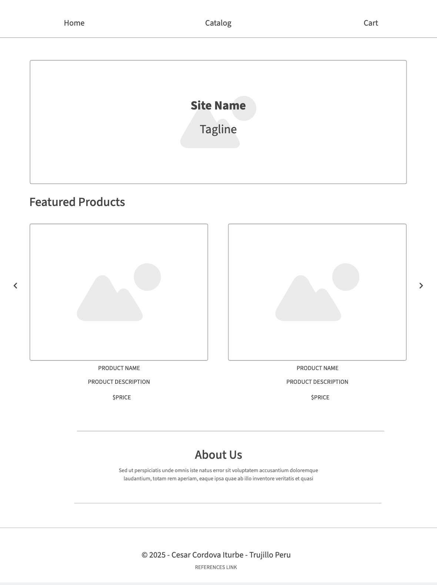
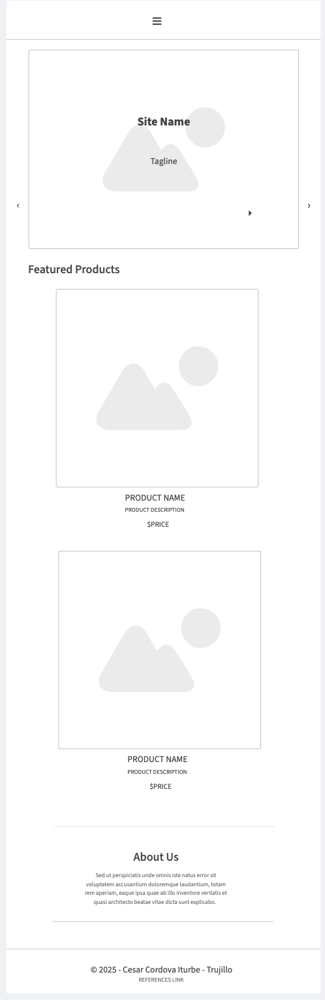

Site Name
Dessert Haven
This name reflects our commitment to offering indulgent, high-quality desserts that bring joy to our customers. It evokes a sense of warmth and delight, inviting dessert lovers to experience something truly special.
Optional Domain: desserthaven.com
Site Purpose
Dessert Haven is an online dessert store dedicated to providing a curated selection of mouth-watering treats, seasonal specials, and detailed product information. The site is designed to deliver an exceptional and delightful shopping experience that satisfies every sweet craving.
Scenarios
- Scenario 1: "What seasonal dessert specials do you offer, and how can I learn more about them?"
- Scenario 2: "Where can I find detailed ingredient and nutritional information for your desserts?"
Color Schema
Our selected color scheme includes:
- #007BFF – Primary color used for headings, navigation background, buttons, and accent elements.
- #FFFFFF – Secondary color for backgrounds and body text.
- #F9F9F9 – Light background shade for sections and cards.
These colors create a modern, clean, and visually appealing design that enhances readability and user experience.
Typography
We have chosen Poppins as our primary font. It will be used for headings, navigation, and body text to ensure a modern, clean, and legible appearance.
Wireframe
The home page layout includes the following key elements:
- Header: Contains the navigation menu with a hamburger menu icon for mobile view (no logo is used in the nav).
- Main Banner: Features a background image, site name, and tagline.
- Featured Products Section: Displays a grid of dessert products with images, names, prices, and "Add to Cart" buttons.
- About Us Section: Provides a brief description of the brand and its values.
- Footer: Fixed at the bottom, containing references and contact information.
Below is a simplified sketch for both desktop and mobile views:
Desktop Wireframe:
Mobile Wireframe:
